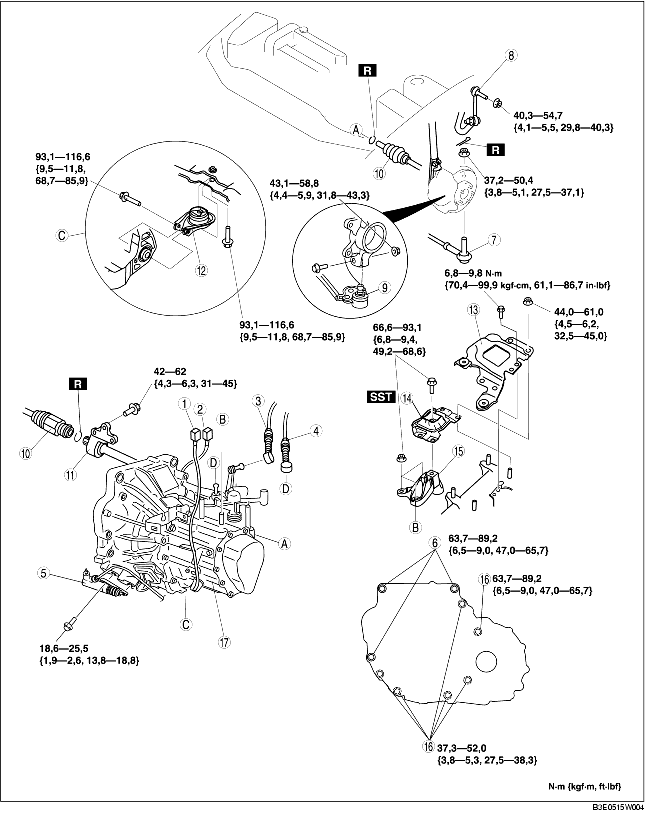

1. Déposer les pièces suivantes :
2. Vidanger l'huile de boîte-pont dans un récipient approprié.
3. Déposer les différents éléments selon l'ordre indiqué dans le tableau.
4. Pour la repose, suivre l'ordre inverse de la dépose.
5. Ajouter la quantité spécifiée d'huile pour boîte-pont du type spécifié.

.
|
1
|
Connecteur du contacteur des feux de recul
|
|
2
|
Connecteur du contacteur de point mort
|
|
3
|
Câble de sélecteur
|
|
4
|
Câble de changement de vitesse
|
|
5
|
Cylindre de débrayage
|
|
6
|
Boulon de fixation de boîte-pont (côté supérieur)
|
|
7
|
Joint à rotule d'embout de biellette de direction
(voir la section DEPOSE/REPOSE DE BOITIER ET DE TIMONERIE DE DIRECTION.)
|
|
8
|
Fourchette de stabilisateur
|
|
9
|
Joint à rotule d'arbre inférieur
|
|
10
|
Arbre de transmission
(voir la section DEPOSE/REPOSE D'ARBRE DE TRANSMISSION.)
|
|
11
|
Arbre de raccordement
(voir la section DEPOSE/REPOSE D'ARBRE DE RACCORDEMENT.)
|
|
12
|
Caoutchouc de fixation de moteur N° 1
(voir la section Note sur la repose de fixation de moteur N° 1 et du support de fixation de moteur N° 4.)
|
|
13
|
Support de batterie
|
|
14
|
Caoutchouc de fixation de moteur N° 4
(voir la section Note sur la repose de fixation de moteur N° 1 et du support de fixation de moteur N° 4.)
|
|
15
|
Support de fixation de moteur N° 4
(voir la section Note sur la repose de fixation de moteur N° 1 et du support de fixation de moteur N° 4.)
|
|
16
|
Boulon de fixation de boîte-pont (côté inférieur)
|
|
17
|
Boîte-pont manuelle
(voir la section Note sur la dépose de boîte-pont manuelle.)
(voir la section Note sur la repose de boîte-pont manuelle.)
|
1. Déposer les deux extrémités du câble de changement de vitesse, ainsi que l'extrémité du câble de sélecteur à l'aide d'un extracteur d'élément de fixation.
1. Déposer le réservoir de réserve P/S, ainsi que le réservoir de réserve de liquide de refroidissement avec le flexible qui lui est attaché.
2. À l'aide de boulons au numéro de pièce 99794 1025 ou de boulons M10×1,25, d'une longueur de 25 mm {0,98 in}, monter l'outil SST dans la position indiquée par l'illustration.
3. Insérer une dosse de taille appropriée entre le panneau d'aile avant et la partie supérieure du renforcement d'auvent.
4. Soutenir le moteur à l'aide de l'outil SST.
5. Déposer le support de batterie, le caoutchouc de fixation de moteur N° 4 et le support.
1. Desserrer la pièce marquée de la lettre A et incliner le moteur vers la boîte-pont.
2. Soutenir la boîte-pont à l'aide d'un cric.
3. Déposer les boulon de montage de la boîte-pont.
4. Déposer la boîte-pont.
1. Placer la boîte-pont sur un cric et la soulever en place.
2. Reposer les boulons de fixation de la boîte-pont.
3. Serrer l'outil SST (49 E017 5A0) de sorte que le moteur soit dans la position spécifiée.
1. Reposer le support de fixation de moteur N° 4 sur le carter de boîte-pont, et serrer les écrous.
2. Reposer le caoutchouc de fixation de moteur N° 1 sur la barre transversale, et serrer temporairement les boulons.
3. Placer le caoutchouc de fixation de moteur N° 4 en faisant passer les goujons via les orifices de la carrosserie, et serrer le boulon indiqué dans l'illustration.
4. Placer le support de batterie sur le caoutchouc de fixation de moteur N° 4 en faisant passer les goujons via les orifices de la carrosserie, et serrer les écrous indiqués dans l'illustration.
5. Serrer les boulons à fond.
6. Déposer les outils SST.